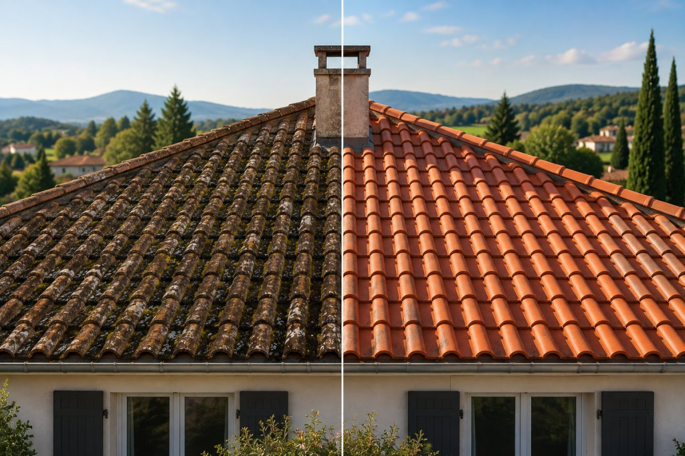

Couverture
Réfection complète ou partielle : ardoise naturelle, tuiles plates, tuiles romanes ou mécaniques, bac acier.
Devis couvertureCouvreur pour particuliers et professionnels : réfection de toiture, réparation de fuites, zinguerie et isolation. Nous nettoyons aussi dallages, terrasses, maisons et locaux professionnels.
Une urgence ? Appelez le 07 82 62 78 56
Garantie décennale
Assurance travaux
Devis gratuit
Sans engagement
Artisan couvreur
Travail soigné
De la tuile cassée à la toiture complète, nous intervenons sur maisons, immeubles et bâtiments professionnels.
Réfection complète ou partielle : ardoise naturelle, tuiles plates, tuiles romanes ou mécaniques, bac acier.
Devis couvertureRecherche de fuite, bâchage d’urgence, remplacement de tuiles et réparation après tempête.
Signaler une fuiteGouttières, descentes, chéneaux, noues et solins en zinc, cuivre ou aluminium.
Devis zinguerieContrôle, traitement du bois, renforcement et remplacement de pièces abîmées.
Devis charpenteCombles perdus et aménagés, écran sous-toiture. Moins de chaleur perdue en hiver.
Devis isolationNettoyage de la toiture, traitement anti-mousse et hydrofuge pour la protéger plus longtemps.
Devis démoussage Voir la démo en 3DAu-delà de la toiture, nous nettoyons vos dallages et vos terrasses, votre maison et tout type de locaux professionnels.
Allées, cours, parkings et abords en dalles, pavés ou béton : mousses, salissures et taches disparaissent.
Devis dallageCarrelage, pierre, bois ou béton : votre terrasse retrouve son aspect d’origine, à la sortie de l’hiver comme avant l’été.
Devis terrasseUn grand nettoyage, à l’intérieur comme à l’extérieur : après des travaux, avant une vente ou un emménagement.
Devis maisonBureaux, commerces, cabinets, ateliers, entrepôts : nous nettoyons tout type de locaux professionnels.
Devis locauxQuelques chantiers récents, de la réparation à la réfection complète.
 Photo avant travauxrealisations/avant.jpg
Photo avant travauxrealisations/avant.jpg
 Photo après travauxrealisations/apres.jpg
Photo après travauxrealisations/apres.jpg
Ardoise · Démoussage et traitement hydrofugeVille — année

Photo à ajouterrealisations/chantier-1.jpgAvantAprès Photo à ajouterrealisations/chantier-2.jpgAvantAprès
Photo à ajouterrealisations/chantier-2.jpgAvantAprès Photo à ajouterrealisations/chantier-3.jpg
Photo à ajouterrealisations/chantier-3.jpg Photo à ajouterrealisations/chantier-4.jpg
Photo à ajouterrealisations/chantier-4.jpg Photo à ajouterrealisations/chantier-5.jpg
Photo à ajouterrealisations/chantier-5.jpg Photo à ajouterrealisations/chantier-6.jpg
Photo à ajouterrealisations/chantier-6.jpgCe que nos clients disent de nos chantiers, sur Google.
★★★★★
Avis à ajouter : le texte d’un avis laissé par un client sur Google.
★★★★★
Avis à ajouter : le texte d’un avis laissé par un client sur Google.
★★★★★
Avis à ajouter : le texte d’un avis laissé par un client sur Google.
Une sélection d’avis publiés par nos clients sur Google, reproduits sans modification et classés du plus récent au plus ancien. Tous nos avis sont consultables sur notre fiche Google.
Choisissez votre toiture, puis faites défiler : elle se monte sous vos yeux, dans l’ordre d’un vrai chantier.
Sablières, pannes, faîtière et chevrons portent tout le toit. Autour de la cheminée, un chevêtre reprend les chevrons coupés. Nous contrôlons, traitons et remplaçons les bois abîmés.
De la laine de verre glissée entre les chevrons. Dans une maison mal isolée, jusqu’à 30 % de la chaleur s’échappe par le toit.
Une membrane respirante, posée en lés depuis l’égout, arrête l’eau et la poussière et laisse sortir l’humidité. Les contre-liteaux qui la tiennent créent une lame d’air qui ventile la couverture.
Sur les liteaux, chaque ardoise est tenue par un crochet inox, rang par rang depuis l’égout. Au sommet, les tuiles faîtières en terre cuite sont scellées au mortier.
Gouttières demi-rondes sur leurs crochets, descentes, bandes de rive et abergement autour de la cheminée évacuent la pluie loin des murs.
Avec les années, mousses et lichens s’installent et retiennent l’humidité. Nous nettoyons la couverture du faîtage vers l’égout, puis appliquons un traitement anti-mousse et un hydrofuge qui la protègent plus longtemps.
La démonstration démarre en arrivant ici.
Touchez ce que vous constatez : vous obtenez un premier avis tout de suite. Ensuite, nous venons vérifier gratuitement.
Votre premier avis
Touchez ce que vous voyez sur votre toit
Avis indicatif, confirmé lors de la visite gratuite.
Ou vous remplissez le formulaire. Nous fixons une date de visite.
Nous inspectons la toiture ou les surfaces à nettoyer et vous remettons un devis détaillé, gratuit.
Chantier protégé et sécurisé. Les déchets sont évacués.
Nous vérifions le travail ensemble et vous remettons la garantie.
Non. La visite, le diagnostic et le devis sont gratuits et sans engagement.
Oui : dallages, terrasses, maisons et tout type de locaux professionnels (bureaux, commerces, ateliers, entrepôts…). Décrivez-nous ce qu’il faut nettoyer, nous vous proposons une visite et un devis gratuit.
Tuiles cassées ou poreuses, mousse abondante, taches d’humidité au plafond, gouttières qui débordent. Une visite permet de savoir si une réparation suffit. Le diagnostic express vous donne un premier avis.
Oui. Après une tempête, nous bâchons la toiture pour la mettre hors d’eau, puis nous réparons. Nous vous aidons aussi pour la déclaration à l’assurance.
Une réparation se fait souvent dans la journée. Une réfection complète prend de quelques jours à quelques semaines selon la surface et la météo. Le planning figure sur le devis.
Pour un logement achevé depuis plus de deux ans, les travaux de rénovation bénéficient en général d’une TVA à 10 %, et l’isolation d’une TVA à 5,5 %. Nous vérifions votre cas et l’indiquons sur le devis.
Oui, ils sont couverts par notre assurance décennale. L’attestation vous est remise avec le devis.
Laissez vos coordonnées, nous vous rappelons pour fixer une visite. Le diagnostic et le devis sont gratuits.
Urgence
Fuite, tuiles envolées après une tempête ? Appelez directement : nous mettons votre toiture hors d’eau au plus vite.
Appeler le 07 82 62 78 56